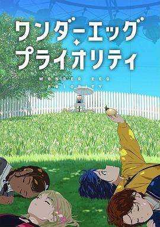

奇蛋物语 / ワンダーエッグ・プライオリティ
又名：Wonder Egg Priority
设定相当有意思，非常有女神异闻录的感觉，角色设定也是非常讨喜，很久没看（到这种类型的）番了。结局有点没看懂，arigatou不知道是在说啥。OP ED也是非常好听，不过配图部分好简单啊，直接拍照+PS结束。
作品信息
| 导演 | 若林信 / 山崎雄太 / 高雄统子 / 牛岛新一郎 |
| 编剧 | 野岛伸司 |
| 主演 | 相川奏多 / 楠木灯 / 齐藤朱夏 / 矢野妃菜喜 / 田所梓 / 内田夕夜 / 高桥广树 / 白石晴香 / 中泽匡智 / 安济知佳 / 佐藤聪美 / 井上麻里奈 / 田边留依 / 花守由美里 / 武田华 / 古贺葵 / 本渡枫 / 千本木彩花 / Lynn / 山口爱 |
| 类型 | 剧情 / 动作 / 动画 / 惊悚 / 奇幻 |
| 制片国家/地区 | 日本 |
| 语言 | 日语 |
| 首播 | 2021-01-12(日本) |
| 集数 | 12 |
| 单集片长 | 24分钟 |
| IMDb | tt13248076 |
说过什么
2021-08-14 01:18:26
广播 · 看过
设定相当有意思，非常有女神异闻录的感觉，角色设定也是非常讨喜，很久没看（到这种类型的）番了。结局有点没看懂，arigatou不知道是在说啥。OP ED也是非常好听，不过配图部分好简单啊，直接拍照+PS结束。
2021-08-11 18:51:35
广播 · 在看
设定相当有意思啊
2021-03-19 23:15:37
广播 · 想看
最后一次看到是 2026-08-01T11:05:14+10:00 · 豆瓣原页